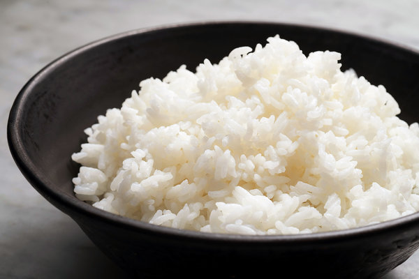

Cooking Rice on Stovetop

Homemade Rice
Recipe for Cooking Rice on a Stovetop and not a Ricecooker
Ingredients
Steps
- Rinse the rice.
- Use the right ratio of water. Add 2 parts water and 1 part rice to a large pot. For slightly firmer rice, use 1 part liquid to 2/3 parts rice.
- Bring the water to a boil. Once it's boiling, add a big pinch of salt.
- Maintain a simmer. Reduce heat to low, cover the pot with a tight fitting lid, and maintain a gentle simmer.
- Cook without peeking or stirring. Cook until the water is absorbed, about 18 minutes. Try not to peek until the end of the cooking time so the steam doesn't escape. Whatever you do, don't mix the rice while it's cooking — this will lead to gummy rice.
- Let the rice rest covered. Turn off the heat and let the rice sit, covered, for 10 minutes. During this time, the rice will steam for extra fluffy results.
- Fluff the rice with a fork.